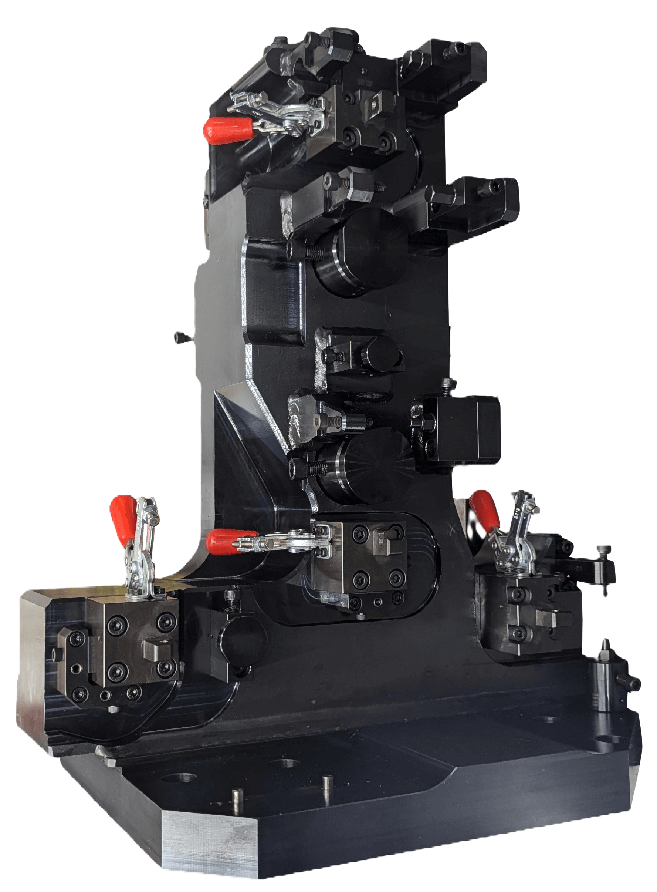

Built-to-Print Tooling
Zeman specializes in the manufacture of your existing designs. We offer assistance for concept development or help with the finishing process. We machine, assemble, and test the complete part, offering build-to-print functionality. Whether it’s a customer prototype or a high volume of parts that require a quick turnaround, Zeman Tool is well-equipped.
